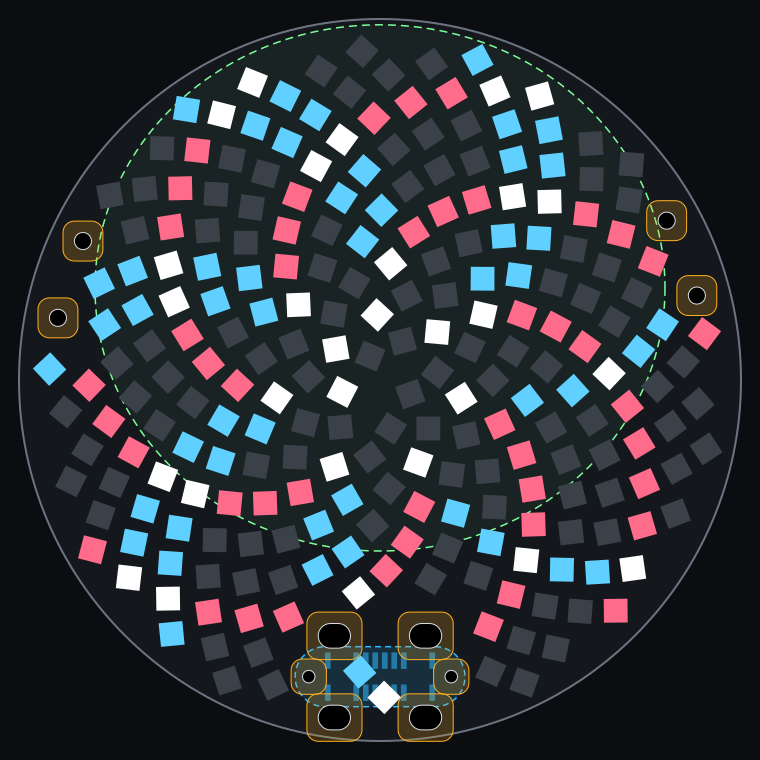
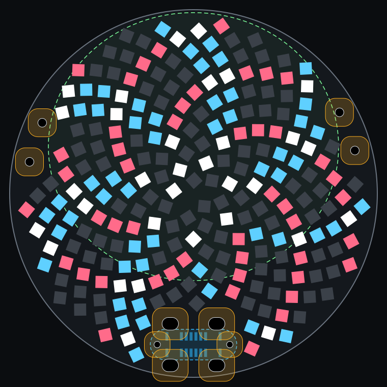
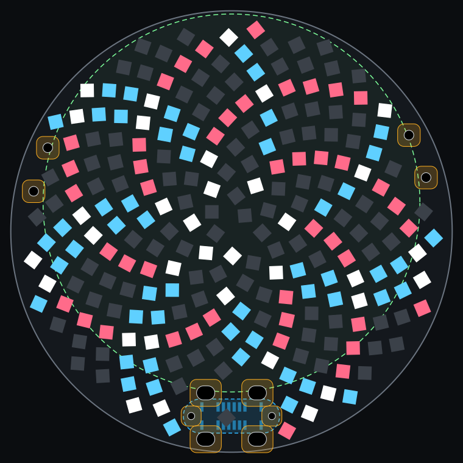
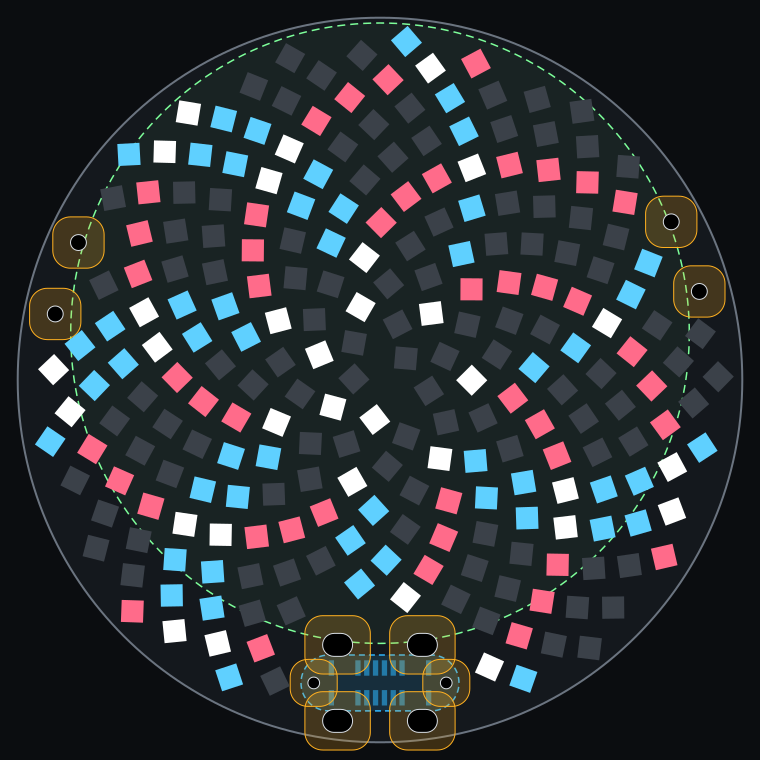
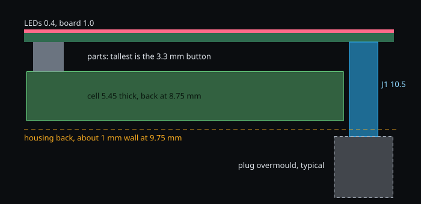

Vertical USB-C out of the back, with the turned sunflower
A study only: the board in hw/ is unchanged. Seen from the LED side, with the back-side connector and cell drawn through the board. Gaps come from a geometry model, and nothing has been routed. Connector: LAILAN LAIL-TYPE-C-16PIN-05-LT (C55591234), 10.5 mm tall.
one windopposing windbothother LEDsthrough-holeLED keepoutUSB-C, backcell, back
| Plan | Cell | LEDs | Min pitch, mm | Min pad gap, mm | LED to USB-C hole, mm |
|---|---|---|---|---|---|
| Edge-mount USB-C, 38 mm (plan C, for comparison) | 5435035 | 234 | 1.83 | 0.29 | 0.61 |
| 38 mm, smaller cell, 0.6 mm hole margin | GRP6530027 | 234 | 1.83 | 0.28 | 0.61 |
| 38 mm, smaller cell, 1.0 mm hole margin | GRP6530027 | 234 | 1.80 | 0.26 | 1.04 |
| 41 mm, keeps the chosen cell, 0.6 mm hole margin | 5435035 | 234 | 2.00 | 0.45 | 0.60 |
| 41 mm, keeps the chosen cell, 1.0 mm hole margin | 5435035 | 234 | 1.98 | 0.43 | 1.03 |


Tightest pad gap 0.28 mm, LED to USB-C hole 0.61 mm.


Tightest pad gap 0.26 mm, LED to USB-C hole 1.04 mm.


Tightest pad gap 0.45 mm, LED to USB-C hole 0.60 mm.


Tightest pad gap 0.43 mm, LED to USB-C hole 1.03 mm.
Why the board size and the cell are linked
The plug has to come out beside the cell, not through it. On a 38 mm board, the largest round cell that leaves room for the connector is 32.2 mm across; the chosen cell is 35 mm. Cell depth is measured north to south, with the cell pushed against the north rim, 0.5 mm from the connector. Grepow's guide says these cells aren't perfect circles; the listed sizes are from that guide and reseller listings, without maker datasheets, and capacities are at each listed full-charge voltage. This board charges to 4.2 V, so cells listed above that give less.
| Cell | Size, mm | Listed | Board needed, mm | Cell back above board, mm |
|---|---|---|---|---|
| Grepow 5435035 (chosen) | 35 × 35.1 × 5.45 | 610 mAh listed | 40.9 | 8.75 |
| Grepow GRP4435035 | 35 × 33.5 × 4.4 | 465 mAh, 4.2 V | 39.3 | 7.70 |
| Grepow GRP7535035 | 35 × 33.5 × 7.15 | 845 mAh, 4.4 V | 39.3 | 10.45 |
| Grepow GRP6530027 | 30 × 27.7 × 6.35 | 430 mAh, 4.35 V | 38.0 | 9.65 |
Section through the connector, 41 mm plan
